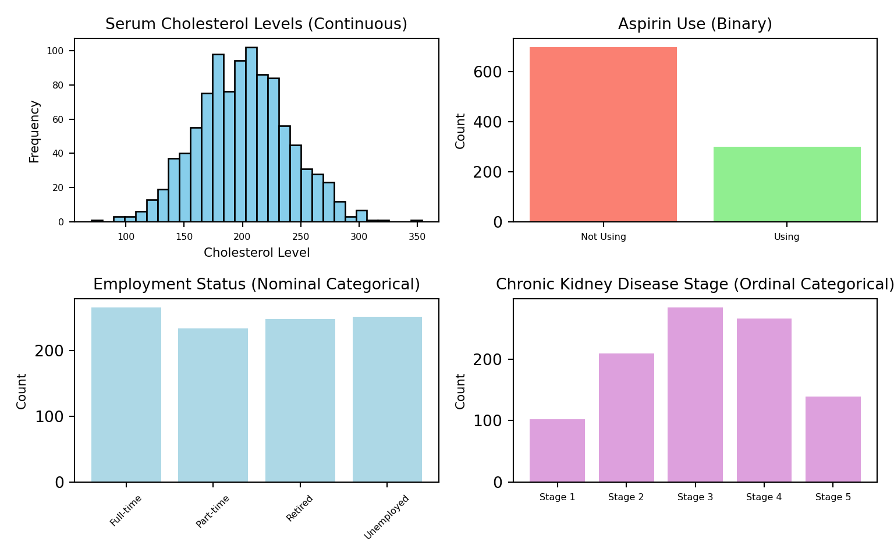
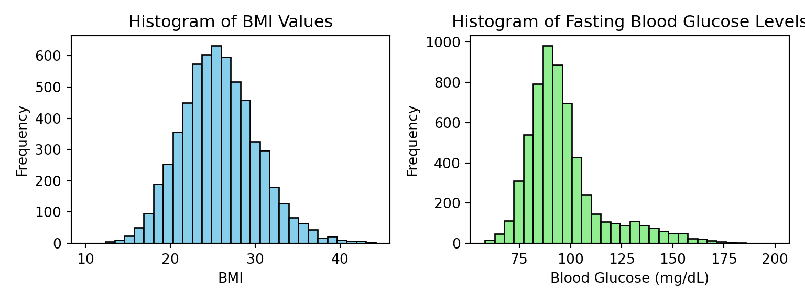

#reticulate::py_install(packages = "matplotlib")2 Summary Measures in Statistics
2.1 Types of Variables
To illustrate the concepts of continuous, binary, and categorical variables in clinical research using Python, we can create visualizations that demonstrate each type. Let’s create some synthetic data to represent these variable types and then plot them to understand their characteristics better.
Continuous Variables: These can take on an infinite number of values along a number line, such as body temperature or serum cholesterol levels. We’ll simulate serum cholesterol levels and plot a histogram.
Binary Variables: These take on only two possible values. An example could be aspirin use, represented by 0 (not using aspirin) or 1 (using aspirin). We’ll create a simple bar chart to represent this.
Categorical Variables: These take on a limited number of categories. They can be nominal, with no inherent order (e.g., employment status), or ordinal, with a logical order (e.g., stages of chronic kidney disease). We’ll visualize employment status as a nominal categorical variable and chronic kidney disease stage as an ordinal categorical variable.
Let’s generate and visualize these data types with Python code.
# Adjusting the figure size and text size for better fit on the page
import matplotlib.pyplot as plt
import numpy as np
# Adjust figure size
fig, axs = plt.subplots(2, 2, figsize=(8, 5))
# Simulate data
np.random.seed(42)
serum_cholesterol = np.random.normal(200, 40, 1000)
aspirin_use = np.random.choice([0, 1], size=1000, p=[0.7, 0.3])
employment_status = np.random.choice(['Full-time', 'Part-time', 'Unemployed', 'Retired'], 1000)
ckd_stage = np.random.choice(['Stage 1', 'Stage 2', 'Stage 3', 'Stage 4', 'Stage 5'], 1000, p=[0.1, 0.2, 0.3, 0.25, 0.15])
# Customize font sizes
title_fontsize = 10
label_fontsize = 8
ticks_fontsize = 6
# Continuous Variable (Serum Cholesterol)
axs[0, 0].hist(serum_cholesterol, bins=30, color='skyblue', edgecolor='black')
axs[0, 0].set_title('Serum Cholesterol Levels (Continuous)', fontsize=title_fontsize)
axs[0, 0].set_xlabel('Cholesterol Level', fontsize=label_fontsize)
axs[0, 0].set_ylabel('Frequency', fontsize=label_fontsize)
axs[0, 0].tick_params(axis='both', which='major', labelsize=ticks_fontsize)
# Binary Variable (Aspirin Use)
unique, counts = np.unique(aspirin_use, return_counts=True)
axs[0, 1].bar(['Not Using', 'Using'], counts, color=['salmon', 'lightgreen'])
axs[0, 1].set_title('Aspirin Use (Binary)', fontsize=title_fontsize)
axs[0, 1].set_ylabel('Count', fontsize=label_fontsize)
axs[0, 1].tick_params(axis='x', labelsize=ticks_fontsize)
# Categorical Variable (Employment Status - Nominal)
unique, counts = np.unique(employment_status, return_counts=True)
axs[1, 0].bar(unique, counts, color='lightblue')
axs[1, 0].set_title('Employment Status (Nominal Categorical)', fontsize=title_fontsize)
axs[1, 0].set_ylabel('Count', fontsize=label_fontsize)
axs[1, 0].tick_params(axis='x', labelsize=ticks_fontsize, rotation=45)
# Categorical Variable (CKD Stage - Ordinal)
unique, counts = np.unique(ckd_stage, return_counts=True)
axs[1, 1].bar(unique, counts, color='plum')
axs[1, 1].set_title('Chronic Kidney Disease Stage (Ordinal Categorical)', fontsize=title_fontsize)
axs[1, 1].set_ylabel('Count', fontsize=label_fontsize)
axs[1, 1].tick_params(axis='x', labelsize=ticks_fontsize)
plt.tight_layout()
plt.show()
The visualizations above demonstrate the different types of variables used in clinical research studies:
Serum Cholesterol Levels (Continuous): The histogram for serum cholesterol levels shows a continuous distribution of values, typical for continuous variables. Such variables can take on any value within a range and are often visualized using histograms to show the distribution of measurements.
Aspirin Use (Binary): The bar chart for aspirin use illustrates a binary variable, where there are only two possible values: using aspirin (1) or not using aspirin (0). Binary variables are often summarized and visualized using counts or proportions of each category.
Employment Status (Nominal Categorical): The employment status variable is an example of a nominal categorical variable, where categories do not have an inherent order. Each category (Full-time, Part-time, Unemployed, Retired) is represented, showing the distribution of participants across these employment statuses.
Chronic Kidney Disease Stage (Ordinal Categorical): This variable is an example of an ordinal categorical variable, where categories have a logical order (from Stage 1 to Stage 5). The bar chart shows the count of participants in each stage, illustrating how ordinal categorical data can be visualized to reflect the ordering of the categories.
These visualizations help in understanding the characteristics and distributions of different types of variables in clinical research, aiding in the selection of appropriate statistical analyses and interpretation of data.
2.2 Univariate Statistics
2.2.1 Univariate Statistics: Exploring Data with Histograms
Clinical research often generates vast amounts of data, making individual examination of each data point impractical. To effectively communicate the essence of this data, researchers rely on summary measures that distill the distribution of variables into more manageable forms. These summary measures focused on a single variable are known as univariate statistics.
2.2.1.1 The Role of Histograms in Data Analysis
Histograms stand as a fundamental visualization tool, plotting observed values of a variable on the x-axis against their relative frequency on the y-axis. This graphical representation helps in understanding how data is distributed across different values, providing a clear, visual summary of complex datasets.
2.2.1.1.1 Diverse Examples from Clinical Studies
Body Mass Index (BMI): Consider the distribution of BMI values in a large study with thousands of participants. A histogram of BMI might reveal a peak around a BMI of 25, indicating a prevalence of overweight status among the study population. The distribution might show a wide spread of BMI values, from underweight to obese, but with the majority of values clustering around the overweight and slightly obese categories. The presence of a long tail towards higher BMI values would suggest a rightward skew, reflecting a smaller number of individuals with very high BMI.
Fasting Blood Glucose Levels: Another example could involve the fasting blood glucose levels in a similar population. The histogram for this variable might display a different pattern, with a significant peak near the lower end of the glucose range, indicating that a large portion of the population has glucose levels within or slightly above the normal fasting range. However, there might be a long tail towards the higher glucose levels, showcasing a rightward skew. This pattern indicates a subset of the population with elevated glucose levels, possibly pointing to undiagnosed diabetes or pre-diabetes.
2.2.1.2 Insights from Histograms
Identifying Distribution Patterns: The histogram of BMI data, while showing a central clustering, might also reveal a skew towards higher values, suggesting issues related to obesity in the population under study. On the other hand, the fasting blood glucose histogram’s rightward skew towards higher values highlights a concern for glucose management and potential diabetes risk in the population.
Understanding Population Health: These histograms offer a visual snapshot of health-related metrics within a population, aiding in the identification of prevalent health conditions and risks. They help public health officials and clinicians in targeting interventions and allocating resources efficiently.
The Importance of Skewness and Distribution Shape: The shape of a histogram—whether it is symmetrical or skewed, bell-shaped or flat—provides essential clues about the underlying distribution of the data. This information is critical for statistical analysis and interpretation in clinical research and public health policy-making.
Through the lens of histograms, researchers can succinctly summarize and analyze the distribution of complex health data. By visually representing how variables like BMI and fasting blood glucose levels are spread across a population, histograms facilitate a deeper understanding of the health landscape, guiding public health strategies and clinical decision-making.
To illustrate the concept of histograms and their use in visualizing the distribution of health-related data, let’s simulate two datasets: one for Body Mass Index (BMI) and another for fasting blood glucose levels. We will then generate histograms for each dataset to visualize their distribution. This simulation will help in understanding how different patterns of data distribution are reflected in histograms, which is crucial for clinical research and public health analysis.
2.2.1.2.1 Simulating Data and Generating Histograms
We will follow these steps: 1. Simulate BMI Data: Generate a dataset that represents BMI values with a peak around 25, showing a rightward skew to represent the presence of overweight and obese individuals in the population. 2. Simulate Fasting Blood Glucose Levels: Create a dataset for fasting blood glucose levels, with most values clustering around the normal range but with a long tail towards higher values, indicating a risk of diabetes or pre-diabetes in a subset of the population. 3. Visualize Data: Generate histograms for each dataset to visualize the distribution.
Let’s start by simulating the data and creating the histograms using Python:
#Sys.setenv(RETICULATE_PYTHON = "C:/Users/andre/anaconda3/python.exe")import numpy as np
import matplotlib.pyplot as plt
# Simulating BMI data with a right skew
np.random.seed(0) # For reproducibility
bmi_data = np.concatenate([np.random.normal(25, 4, 5000), np.random.normal(30, 5, 1000)])
# Simulating fasting blood glucose levels with a right skew
glucose_data = np.concatenate([np.random.normal(90, 10, 5000), np.random.normal(130, 20, 1000)])
# Creating histograms
fig, ax = plt.subplots(1, 2, figsize=(8, 3))
# BMI Histogram
ax[0].hist(bmi_data, bins=30, color='skyblue', edgecolor='black')
ax[0].set_title('Histogram of BMI Values')
ax[0].set_xlabel('BMI')
ax[0].set_ylabel('Frequency')
# Blood Glucose Histogram
ax[1].hist(glucose_data, bins=30, color='lightgreen', edgecolor='black')
ax[1].set_title('Histogram of Fasting Blood Glucose Levels')
ax[1].set_xlabel('Blood Glucose (mg/dL)')
ax[1].set_ylabel('Frequency')
plt.tight_layout()
plt.show()
2.2.1.2.2 Explanation of the Python Code:
- Data Simulation: We simulate the BMI and fasting blood glucose level data using a combination of normal distributions to mimic the real-world variability and skewness in these health metrics.
- Histogram Generation: Using
matplotlib, we create histograms for each dataset. The number of bins is set to 30 for a detailed visualization of the distribution. - Visualization: Two histograms are plotted side by side for comparison. The BMI histogram is expected to show a skew towards higher values, indicating the presence of overweight and obese individuals. The fasting blood glucose histogram is anticipated to have a concentration of values in the normal range but with a tail extending towards higher values, highlighting the presence of elevated glucose levels among some individuals.
This Python code serves as an illustrative example of how histograms can be used in clinical research and public health to visualize and analyze the distribution of key health indicators within a population.
2.2.1.3 Measures of Location and Spread
Understanding the distribution of data in biostatistics and epidemiology involves not just visualizing the data but also quantifying its central tendency and variability. This section delves into the concepts of measures of location and spread, essential for summarizing data distributions.
2.2.1.3.1 Measures of Location
Mean (Arithmetic Mean): The most common measure of location, the mean, represents the average value of a dataset. It is calculated by summing all observed values and dividing by the total number of observations.
\(\text{Mean} = \frac{1}{N} \sum_{i=1}^{N} x_i\)
where \(x_i\) is each value in the distribution, and \(N\) is the number of observations.
Median: For skewed distributions, the median—a value in the middle of a dataset when it is ordered—serves as a better measure of the typical value, as it is less affected by outliers.
Geometric Mean: Used particularly for skewed distributions, the geometric mean is less sensitive to extreme values. It is calculated by taking the arithmetic mean of log-transformed data and then exponentiating the result to return to the original scale.
\(\text{Geometric Mean} = \exp\left(\frac{1}{N} \sum_{i=1}^{N} \ln(x_i)\right)\)
2.2.1.3.2 Measures of Spread
Standard Deviation: The standard deviation quantifies the amount of dispersion or variability in a dataset. It is the square root of the variance, where the variance measures the average squared deviation from the mean.
\(\text{Standard Deviation} = \sqrt{\frac{1}{N} \sum_{i=1}^{N} (x_i - \mu)^2}\)
where \(\mu\) is the mean value of the dataset.
Variance: The variance is the average of the squared differences from the Mean. It provides a measure of how much each number in the set differs from the mean and thus from every other number in the set.
\(\text{Variance} = \frac{1}{N} \sum_{i=1}^{N} (x_i - \mu)^2\)
Interpretation in Research: In research studies, presenting both the mean and standard deviation offers a comprehensive view of the central tendency and variability within a dataset. For example, stating that the mean systolic blood pressure in a study is 126.6 mmHg with a standard deviation of 21.5 mmHg provides insights into both the average blood pressure and how much variation exists around that average.
2.2.1.3.3 Practical Example
Considering the importance of measures of location and spread, let’s simulate data for systolic blood pressure to illustrate the calculation of these measures in Python:
import numpy as np
# Simulating systolic blood pressure values for a 6000-person cohort
np.random.seed(0)
systolic_bp = np.random.normal(126.6, 21.5, 6000)
# Calculating mean and standard deviation
mean_bp = np.mean(systolic_bp)
std_bp = np.std(systolic_bp)
print(f"Mean Systolic BP: {mean_bp:.2f} mmHg")
print(f"Standard Deviation: {std_bp:.2f} mmHg")
# Calculating geometric mean
geometric_mean_bp = np.exp(np.mean(np.log(systolic_bp[systolic_bp > 0])))
print(f"Geometric Mean Systolic BP: {geometric_mean_bp:.2f} mmHg")This example not only reiterates the importance of these statistical measures but also demonstrates how they can be applied in the context of public health research to provide meaningful insights into the distribution of health-related variables.